"Parle à mon bot"
Organizing my work at Camptocamp with a Slack bot
Are you able to name every tools / online services we use on a
day-to-day basis @ work ?
A few ones:
- JIRA
- Confluence
- Github
- docker-hub
- Odoo
- Google Workspace (mail, calendar, drive ...)
- Amazon AWS (or any other cloud provider)
Wait ... I forgot a one ...
Hint:
Slack !
Some of us formerly were using (or are still using):
- IRC (boring: no emojis, no images)
- Gtalk (not really suited for chat rooms)
- Hipchat (dead now)
Common point between the previously mentioned services ?
They all have an API !
- Odoo has this JSON-RPC endpoint
- Github: REST & GraphQL API
- JIRA (+ plugins) & Confluence have some hidden APIs, and some RSS endpoints
- Slack also has a one
So what ? ¯\_(ツ)_/¯
Why not bridging all these services together around Slack ?
pmauduit/slack-bot
My pet project for an imaginary companion at work
More precisely: A slack bot which warns me about some events from ...
- JIRA & Confluence (RSS & search endpoint)
- Github ("my events" API endpoint)
- AWS S3 (polling a bucket)
A slack bot with which I can interact to:
- Fill in my timesheet (Tempo API)
- Look for resources on confluence
- Find relevant repositories in the C2C org. on github
- List opened Pull-Requests on some repositories
- Give my current working time for the day, week ...
pmauduit/slack-bot
More into the technical details:
- a PoC that went (really) too far !
- Implemented in Groovy
- uses the Java
com.ullink.slack:simpleslackapi library
- API calls to external services are made using a simple HTTP client (no dedicated lib)
- 40/45% code coverage
Let's see now some screenshots
Ex: events coming from Jira (search endpoint)
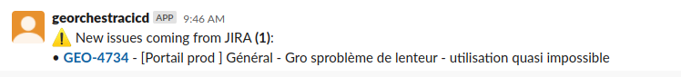
I am generally aware of coming issues before
the Project Management team has the time to affect them to me,
they sometimes discover them once already fixed.
Ex: events coming from Jira (RSS)
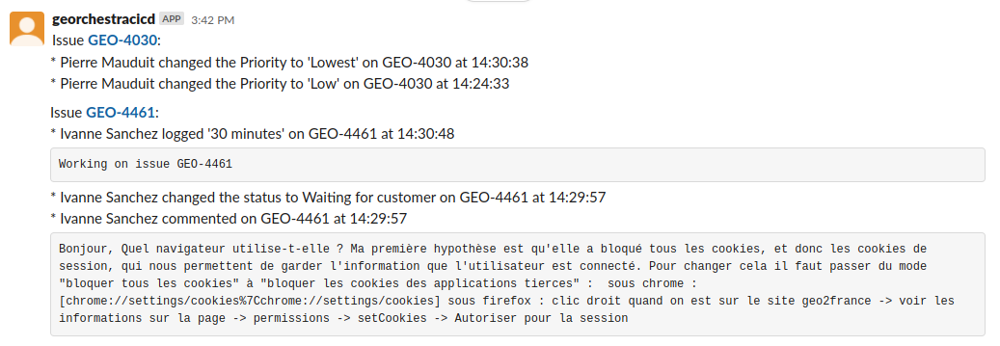
Ex: events coming from Confluence
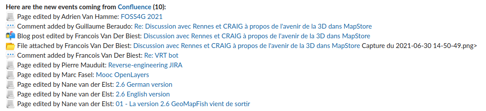
Ex: events coming from Github
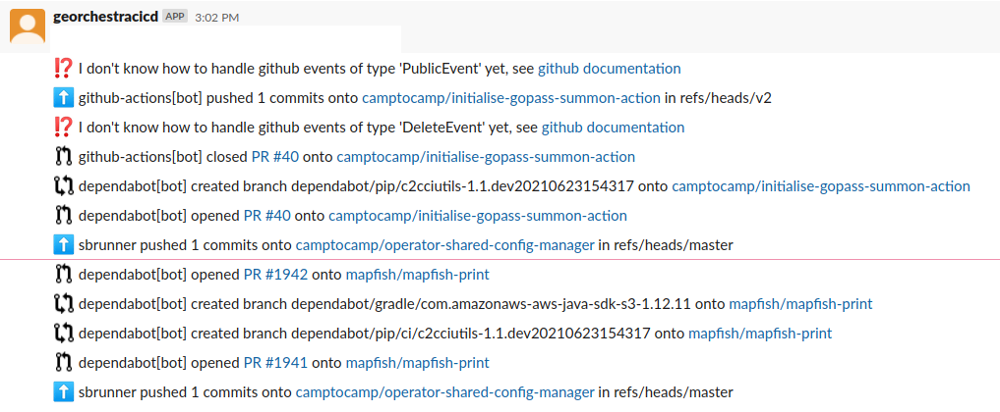
Ex: Detected changes on S3
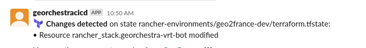
Ex: querying Github
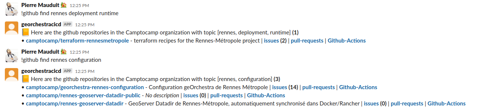
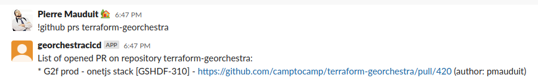
Ex: Checking presence of a colleague
(attendance_state field on res.users)
Note: only works with people from the same company, does not
work with my account on swiss & german colleagues ?! Since we are no
longer required to signin/signout on Odoo anyway ...
Ex: Filling my TS
outside of Tempo !
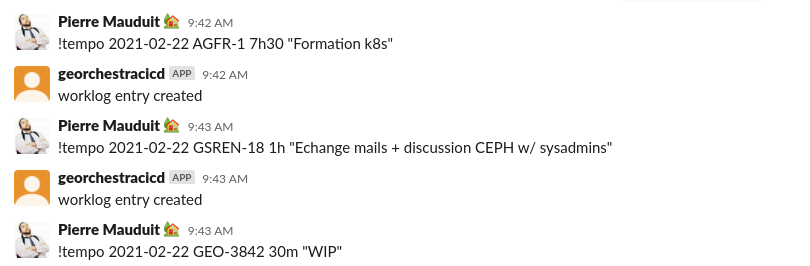
Note: the Tempo UI being not that bad actually, I prefer
to use the official one ... I still use this feature from time to time though.
Ex: working time in realtime
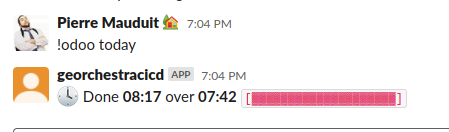
Probably the command I use the most to track my worklog, I can also ask for the summary on the current week.
Ex: getting a worklog from JIRA
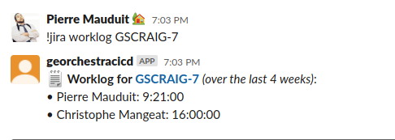
Just to spy on the others' TS ... Or to give a rough idea on where we are on a specific issue.
Ex: Visiting websites 1/2
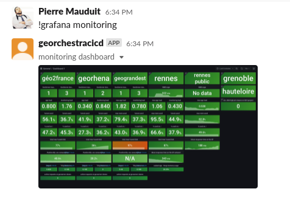
Because I am too lazy to open a new tab in my browser ?
Ex: Visiting websites 2/2
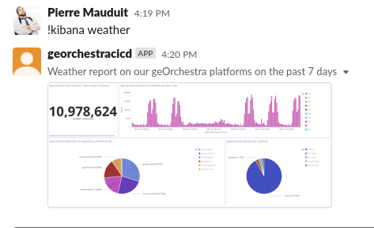
This command is triggered every monday morning at 10:15, and the
result is dumped onto the gs-georchestra slack channel.
What I learned so far
- Finding documentation on JIRA & Confluence is abominable
- JIRA has the less coherent API compared to the other ones
- GraphQL based APIs are puzzling, but the concepts behind are interesting
- Please document the Odoo JSONRPC endpoint !
- Sometimes you don't need a dedicated lib to interact with an API
Conclusions
- I was first willing to escape from Jira, I learned to use it more efficiently
- I was not aware of the amount of data we were creating at work (35k issues on JIRA-C2C !)
- People from the other dept. are also doing interesting stuff
- We should take the time to deeply discover all these tools before even using them
(this project changed my way of using JIRA)
- Camptocamp lacks guidelines at some point (what about an "administrator guide" for the github admins ?)
- Next year, my bot will work for me, and I won't tell you about it.
Thanks for you attention !
Questions ?